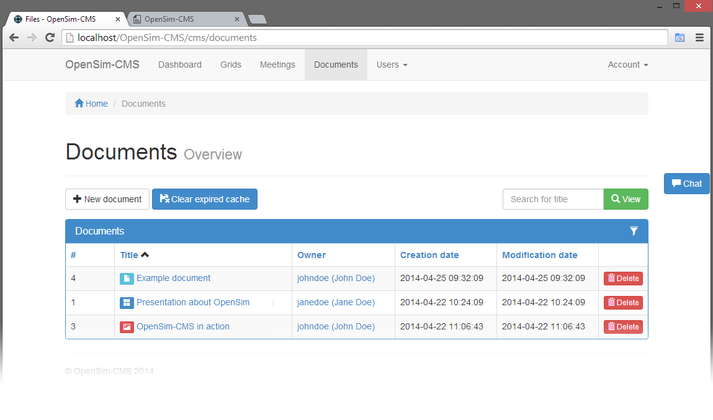

Documents
Tuesday, April 29, 2014 8:55 AMThe documents section contains an overview of the files in the system. This overview will show you all files with one or more of the following conditions:
- Owned by you
- Shared with a group you are in
- You have
ALLpermissions on the Files API

Each document is one of three types, image, document or presentation. Comments can be placed for the whole document or for a specific page/slide. Each document you can see can be shared, well at least if you have EXECUTE permissions on the Files API. Which is also required to add new documents.
Each image, page or slide is resized to a square image within the height (IMAGE_HEIGHT) and width (IMAGE_WIDTH) settings from the configuration, and saved as the configured file type (IMAGE_TYPE). See the Installation section for details about these settings.
Images
Images can be recognized by a red icon in front of the title. Each image consists of only one entry. In contrast to documents and presentations which can contain multiple pages and slides.
Images are added as JPG, JPEG, GIF or PNG. Be sure to select the type image in the list when adding a new file. The image will be processed to a square image within the limits set in the API configuration and to the configured file type.
At the image details page you can download the original image, see the resized image. The resized image can be loaded in OpenSim by using the presenterScreen.lsl script.
Documents
Documents have a light blue icon in front of the title. When adding a new document be sure to select file type document and use a PDF file. The file will be processed to a single image for each page by the API. When viewing the document details you will see thumbnails of each page. By clicking the thumbnail you will see a larger preview. In the top left corner of each thumbnail is the comment icon. When the background of this icon is white, there are no comments for this page, if the icon is green there are comments for that page. By clicking the icon you will see the page as an image with the comments below.
Presentations
Quite similar to documents, presentations also need to be supplied as a PDF file. When adding the file select presentation as type. The file will be processed and resized to single images for each slide. Again the details page will provide an overview of all slide thumbnails, with a comment icon in the top left corner.
Clear expired cache
The clear expired cache option is only visible for users with EXECUTE permissions on the File API. This will remove all cached results from the API database that have passed the expiration time set on the grid. This does not clear the cache from the grid, it will only clear the API database. The API provides the OpenSim server with the expiration date and a flag which states if an entry is expired. See the Cache section in the Files API documentation for more information.
The provided data will be used to determine if the server's cache should be used or if the file should be retrieved through the API. For example the script presenterScreen.lsl will check if the cache is expired and update the UUID of the cached item with a new UUID when required.
So besides some simple clean up this function does not have a lot of effect.